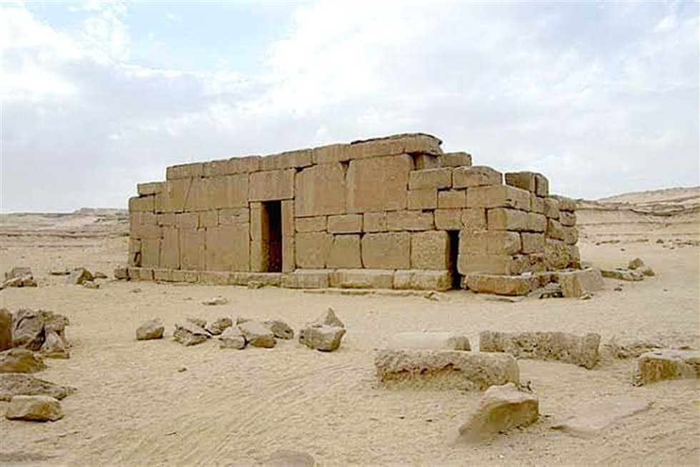

القصور المصرية القديمة كانت مراكز للسلطة والفن والإدارة، تحمل قصص الملكيات والأمراء. على الرغم من أهميتها، لم يصل إلينا معظم القصور مكتملة بسبب الطبيعة الهشة لمواد البناء وتغيرات الزمن.
القصور المصرية القديمة كانت تمثل رمز القوة والسلطة، ولم تكن مجرد أماكن سكن للملوك والنبلاء، بل كانت مراكز للإدارة والحكم، ومراكز للتخطيط العسكري والاجتماعي. القصور كانت تُبنى وفق تصميم هندسي دقيق يعكس التدرج الاجتماعي والوظيفي، من بهو الاستقبال إلى الحجرات الداخلية الخاصة بالملك وعائلته.

على عكس المعابد والمقابر التي بنيت عادة من الحجارة الصلبة مثل الحجر الجيري والجرانيت، استخدم المصريون القدماء في بناء القصور مواد أخف وأكثر هشاشة. الطوب اللبن كان المادة الأساسية، بالإضافة إلى الخشب والأخشاب المستوردة للديكورات والأبواب. الأسقف كانت غالبًا من الخشب أو الجريد، مع الطلاء لتقليل التأثيرات المناخية.
السبب في عدم بقاء القصور مكتملة يعود إلى المواد المستخدمة، فالطوب اللبن معرض للتآكل بالمطر والرياح، والأخشاب تتعفن أو تتعرض للحريق، على عكس الحجر الصلب المستخدم في المعابد والمقابر.
القصور المصرية القديمة كانت تتبع نظامًا معماريًا محددًا. في البداية، يكون هناك بهو استقبال كبير، يليه ساحات داخلية مفتوحة، وأجنحة للملك وعائلته. القصور تحتوي على مخازن، معاصر، أماكن للعمال والخدم، وغرف للحرس. كل جزء كان مخصص لوظيفة معينة، ويعكس التدرج الاجتماعي والسياسي للمجتمع المصري القديم.
1. قصر المالقاتا: بناه الملك أمنحتب الثالث في تل العمارنة، ويُعتبر من أكبر القصور في الدولة الحديثة، ويحتوي على ساحات كبيرة ومخازن وقاعات رسمية.
2. قصر الأهرامات الملكية: كانت القصور المجاورة للأهرامات مراكز للإدارة والاحتفالات الملكية، بنيت من الطوب اللبن والخشب.
3. قصر الملوك في طيبة: احتوى على غرف استقبال واسعة، وأجنحة للملكة والوزراء، مع تصميم يراعي التهوية والإضاءة الطبيعية.

4. قصر تحتمس الثالث: من أشهر القصور التي امتدت عبر الدولة الحديثة، يضم حدائق، قاعات استقبال، وغرف للحرس والخدم.
القصور لم تكن مجرد مساكن، بل كانت مراكز للحكم والإدارة. القصور كانت تستضيف الاحتفالات الملكية، الاجتماعات مع الوزراء، تنظيم الحملات العسكرية، وتخزين الموارد. كما كانت القصور أماكن للعرض الفني والثقافي، حيث الزخارف والتماثيل والنقوش تعكس حياة الملك والفن المصري القديم.

القصور كانت تُبنى بشكل رئيسي من الطوب اللبن والخشب، وهذا جعلها أكثر عرضة للزوال مقارنة بالمقابر والمعابد المصنوعة من الحجارة. العوامل الطبيعية مثل الرياح والأمطار، بالإضافة إلى الهجمات والغزوات، أدت إلى تآكل معظم القصور عبر العصور. لذلك، لم يبقَ إلا أطلال أو أساسات، مع بعض النقوش والزخارف التي تساعدنا على فهم تصميمها ووظائفها.
القصور المصرية القديمة تمثل جانبًا متميزًا من الحضارة المصرية، حيث تدمج بين الفن والهندسة والدين والحياة الاجتماعية. على الرغم من أن معظمها لم يبقَ مكتملًا، إلا أن دراسة الأطلال والمخططات تكشف عظمة التخطيط العمراني والدقة في التصميم. القصور تعكس القوة والرفاهية والفن، وتعلمنا كيف كان المصري القديم يعيش ويدير شؤون الدولة بذكاء وتنظيم.